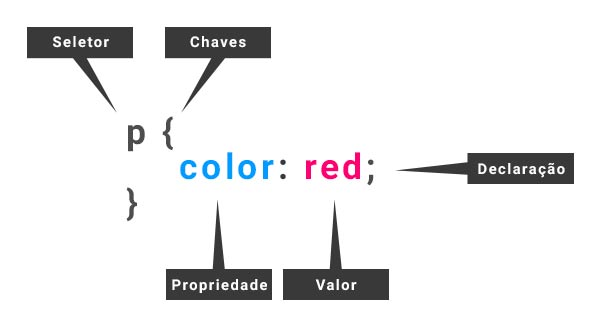
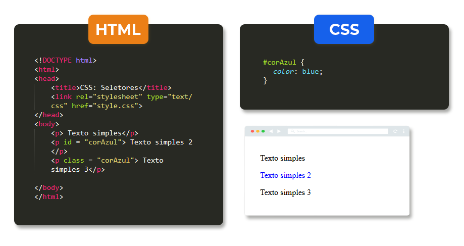
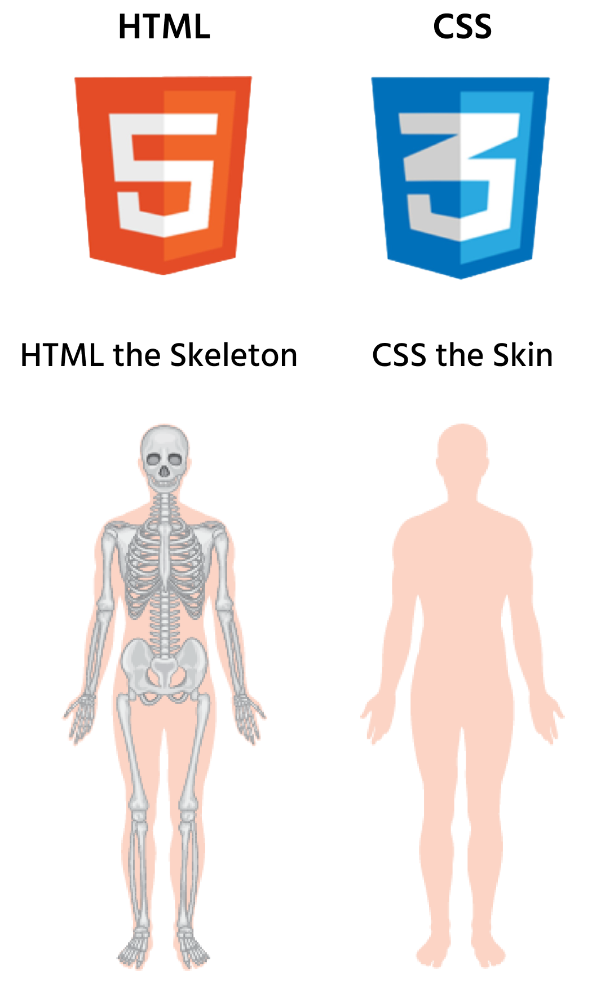

O QUE É CSS, SELETORES, PROPRIEDADES E VALORES?
|
O que é?
O CSS (Cascading Style Sheets) é um padrão que define como os dados são apresentados no
navegador.
Enquanto o HTML fornece informação sobre a estrutura de um documento, o CSS indica a aparência e
adjetivo que ele
deve ter como a fonte, o fundo, o texto, as cores dos links, as margens e a disposição dos objetos
na
página.
O CSS pode ser escrito dentro de uma tag de um elemento HTML (CSS inline), incorporado em uma seção
do
cabeçalho do documento (CSS interno), ou em um arquivo separado, que então é importado ou linkado na
página (CSS externo).
Seletores

Em CSS, os seletores são usados para direcionar os elementos HTML em nossas páginas da
web que queremos
estilizar. Há uma grande variedade de seletores CSS disponíveis, podendo personalizar ao
selecionar os elementos a serem estilizados como uma tag, um id, uma classe ou um atributo, e podem
ser
combinados.
Propriedades

Uma propriedade CSS é uma característica como a cor, tamanho e estilo da fonte cujo valor
define o
atributo de como o navegador deve mostrar o elemento. As principais propriedades cobrem texto,
fundo,
espaçamento, bordas e posicionamento.
Cada propriedade tem um nome e um valor.
Valores

Os valores CSS definem quais tipos de valores são válidos para cada
propriedade CSS.
Por
exemplo, você
pode especificar cores mas não comprimentos ou
porcentagens. Dividindo-se principalmente em unidades absolutas e relativas,
essenciais para o
layout ficar bem utilizável.
Ex absolutas: "px" (pixels usados para definirem tamanhos)
e "cm" (centímetros que se baseia
na
media em
tamanho real do cm)
Ex relativas: "em" (medida relativa, usada para definir tamanhos com base no elemento pai)
e
"%"
(define tamanhos substituindo valores fixos como o "px" com base no elemento pai).
|
|
JÚLIO VIEIRA SILVA - LUCAS ZELIOLI - 1 C3 - ETECVAV DESENVOLVIMENTO DE SISTEMAS
|